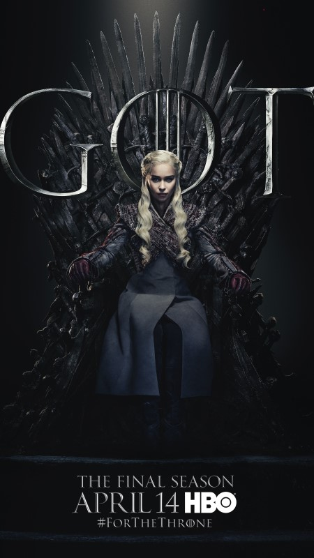

Game Of Thrones


Game of Thrones es una innovadora serie de televisión dramática de fantasía que se convirtió en un fenómeno mundial cuando se estrenó en HBO en 2011. Basada en la serie de libros Canción de hielo y fuego de George R.R. Martin, Game of Thrones está ambientada en los continentes ficticios de Poniente y Essos. y narra las violentas luchas entre familias nobles que compiten por el control del Trono de Hierro y el gobierno de los Siete Reinos.
Lo que distingue a Game of Thrones es su compleja narración, sus personajes moralmente ambiguos y su extenso elenco. El programa teje hábilmente tramas intrincadas llenas de giros impactantes e intriga política.
El vívido mundo de fantasía cobra vida a través de valores de producción de primer nivel, con ubicaciones y escenarios impresionantes, efectos visuales espectaculares y vestuario y accesorios lujosos que transportan a los espectadores a un reino de dragones, lobos huargos, caminantes blancos y magia de inspiración medieval. Game of Thrones presenta personajes intensamente convincentes, desde los astutos y ávidos de poder Lannister hasta los estoicos y heroicos Starks.
La voluntad del programa de matar sin piedad incluso a los queridos personajes principales aumenta lo que está en juego y la tensión. Si bien las últimas temporadas enfrentaron algunas críticas sobre el ritmo y las elecciones de la trama, Game of Thrones siguió siendo culturalmente relevante, provocando un sinfín de teorizaciones, memes y discusiones más frías sobre cada giro impactante de la trama.
Su alcance épico, sus personajes memorables, sus maquinaciones políticas y su entorno de fantasía inmersiva consolidaron a Juego de Tronos como uno de los programas de televisión más populares e importantes del siglo XXI.